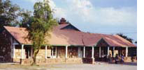

About Global Connections
The Origin of Global Connections:
The catalyst for the International School Leaders Seminar on Global Connections was a day-long discussion in January 1995 involving Heads of Schools and representatives of The Association of Boarding Schools (TABS) and the then Federation of American and International Schools (FAIS). The Convener was Peter D. Pelham, founding director of Pelham Associates, an educational advising group in Maryland; the host was John Ratté, then head of the Loomis Chaffee School in Connecticut.
A summary of that meeting, which sparked the creation of Global Connections, contains 10 objectives which the Heads of School identified as initial steps in working towards a more global perspective.
A second initiative was a session at the 1995 annual conference of the National Association of Independent Schools (NAIS) on global perspectives. The panel for this presentation included four individuals who had participated in the January meeting at Loomis Chaffee.
The third impetus was a three-hour workshop prepared for the 1996 NAIS conference in Washington on "Building Internationalism in Independent Schools: How Can We Learn From Each Other?" More than 40 heads of school or directors of international programs attended. Presentations were made by representatives of Northfield Mount Hermon (U.S.), the Geelong Grammar School (Australia), Maru-a-Pula (Botswana), and the Kyoto Nishi High School (Japan). The emphasis was on identified, achievable international programs initiated by these and other national schools.
Evolution of the Global Connections Seminars
Read about the history of Global Connections Seminars from the initial meeting in 1997 through the evolution of Global Connections.